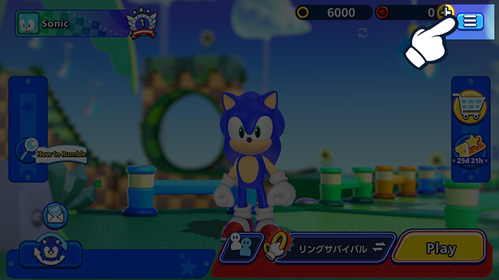
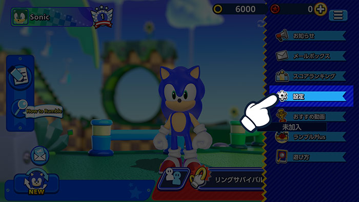
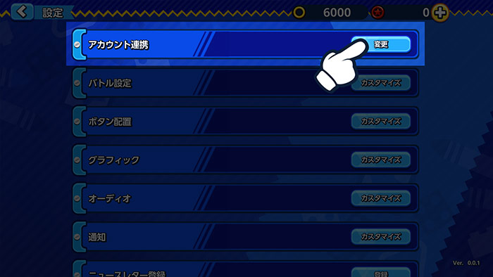
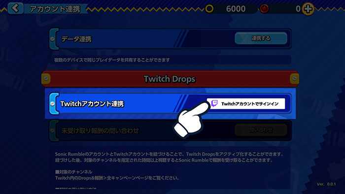
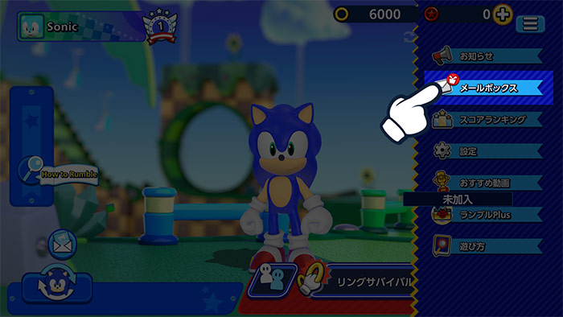
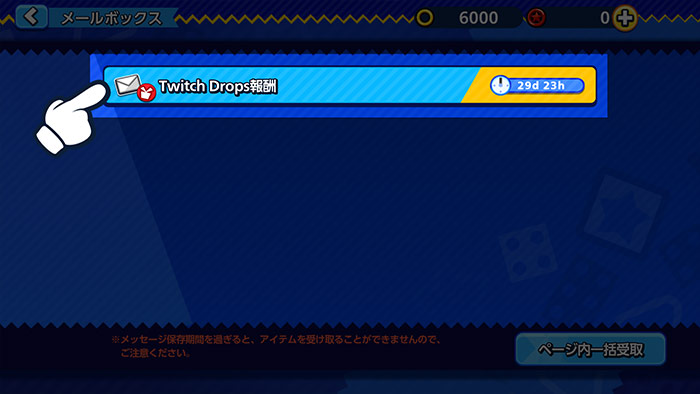

Twitch Dropsライブ配信を視聴して、
Twitch Dropsライブ配信を視聴して、
ゲーム内報酬をゲット！
今すぐTwitchアカウントと連携しよう
アカウント連携方法
1アプリ「Sonic Rumble」からメニューボタンを選択。

2「設定」を選択。

3「アカウント連携」を選択。

4Twitch Dropsの項目から「Twitchアカウントでサインイン」を選択してTwitchアカウントにサインインします。

5TwitchアカウントがSonic Rumbleのアカウントに連携されます。
報酬の受け取り方法
1アプリ「Sonic Rumble」からメニューボタンを選択。

2「メールボックス」に報酬が届きます。

*メンテナンス中に報酬が送付されると報酬の受け取りが正常に行えない場合があります。
その際は、メニュー＞設定＞アカウント連携＞Twitch Drops内の「報酬問い合わせ」ボタンを押下するとメールボックスに報酬が届きます。
FAQ
- QTwitch Dropsとは
- ATwitchでのライブ配信を視聴するだけでゲーム内報酬を入手できるイベントです。
Sonic RumbleのアカウントとTwitchアカウントを連携すれば、本イベントへの参加資格が有効になります。 - Qどうすれば報酬を受け取れますか？
- ATwitch Drops機能を起動したうえで、条件を満たしたSonic Rumbleのライブ配信を視聴すれば、Dropsゲージが貯まり、ゲージが満タンになれば報酬を受け取ることができます。
- Q「Twitch Drops」イベントにちゃんと参加しているかどうかを確認する方法はありますか？
- AこちらからTwitch Inventoryページにアクセスして、今参加されている「Twitch Drops」イベント及び獲得した報酬を確認できます。
- QDrops報酬が届くまでどれくらい時間がかかりますか？
- A報酬は24時間以内にゲーム内のメールボックスに配布されます。
報酬の受け取り後にアカウント連携を解除したい場合は、ご自身のSonic Rumbleアカウントで報酬を受け取ってから操作を行ってください。 - Q複数のゲームアカウントを持っている場合、報酬を複数回受け取れますか？
- A「Twitch Drops」の報酬は複数回受け取ることができません。1つのTwitchアカウントが同時に連携できるSonic Rumbleアカウントは1つのみとなります。
1つのSonic Rumbleアカウントまたは1つのTwitchアカウントでは、同じタイプの報酬を複数回受け取ることはができません。